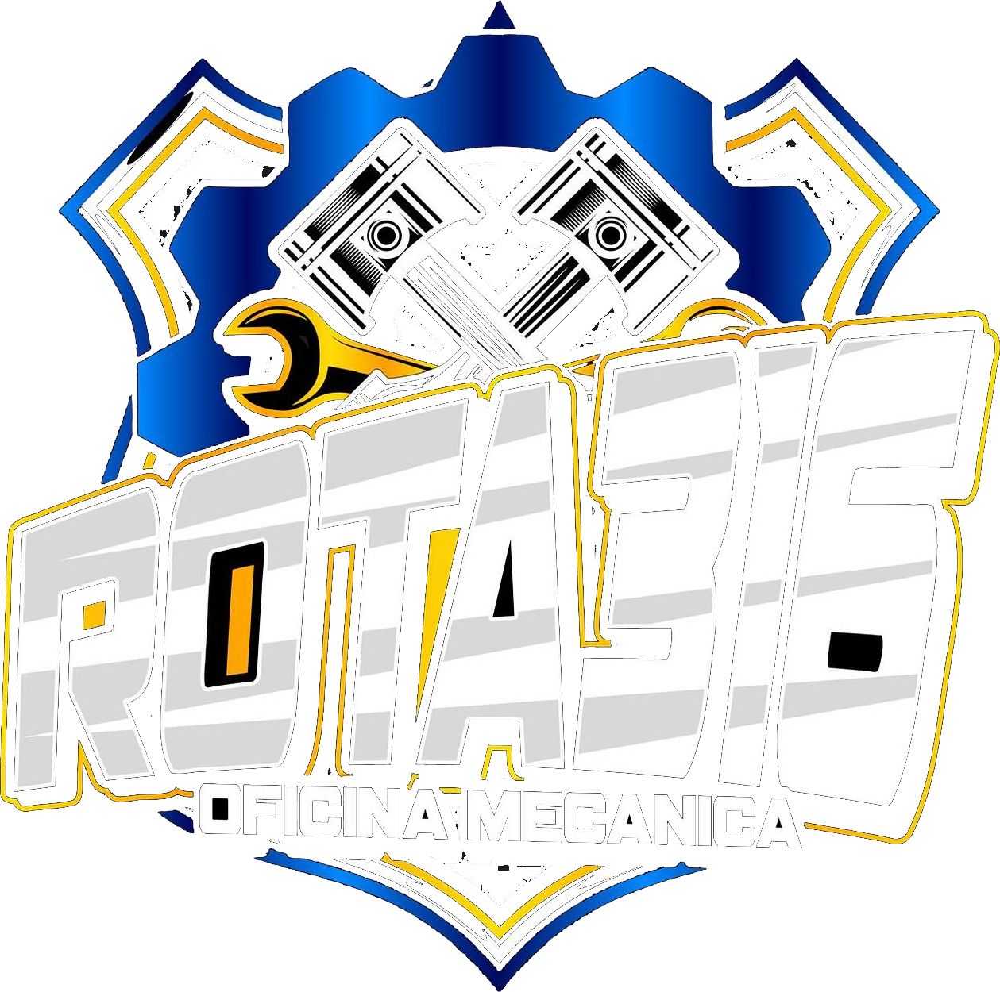

Rota 316
Seu carro em boas mãos
- Alinhamento
- Balanceamento
- Freios
- E muito mais
Fortaleza/CE
- Pedir orçamentoPelo WhatsApp
- InstagramSiga no Instagram
- Como chegarAv. Luiz Vieira, 400 (Perimetral)
Sobre a Rota 316
Oficina mecânica em Fortaleza/CE, na Av. Luiz Vieira, 400 (Perimetral). Alinhamento, balanceamento, freios e muito mais. Seu carro em boas mãos.
ROTA 316 · FORTALEZA/CE